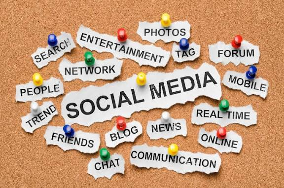
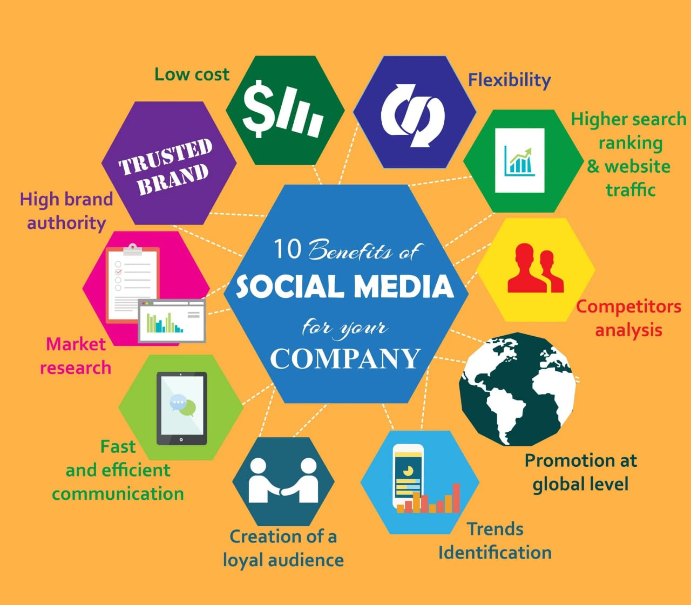
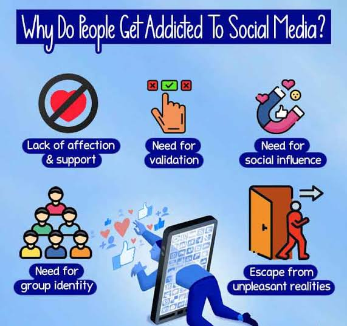

Introduction

Social media has changed how people communicate, share ideas, and stay informed...
However, social media is a double-edged sword...
“Social media should improve your life, not become your life.”
Effective Use of Social Media

1. Learning and Awareness
- Follow educational pages and online courses.
2. Networking and Opportunities
- Build professional connections on LinkedIn.
3. Social Impact
- Support social causes and awareness.
Did you know? People who use social media wisely feel more fulfilled.
Social Media Addiction and Its Effects

Signs of Addiction
- Checking phone constantly
Consequences
- Reduced focus and productivity
Remember: Balance your screen time with real-life connections.
Tips to Maintain a Healthy Balance
- Limit your social media usage to 1–2 hours a day.
Tip: Replace scrolling with journaling before bed.
Social Media Awareness Survey
Ask your friends:
- How many hours a day do you spend online?
Conclusion
Social media isn’t bad — misuse is. Use it with purpose and mindfulness.